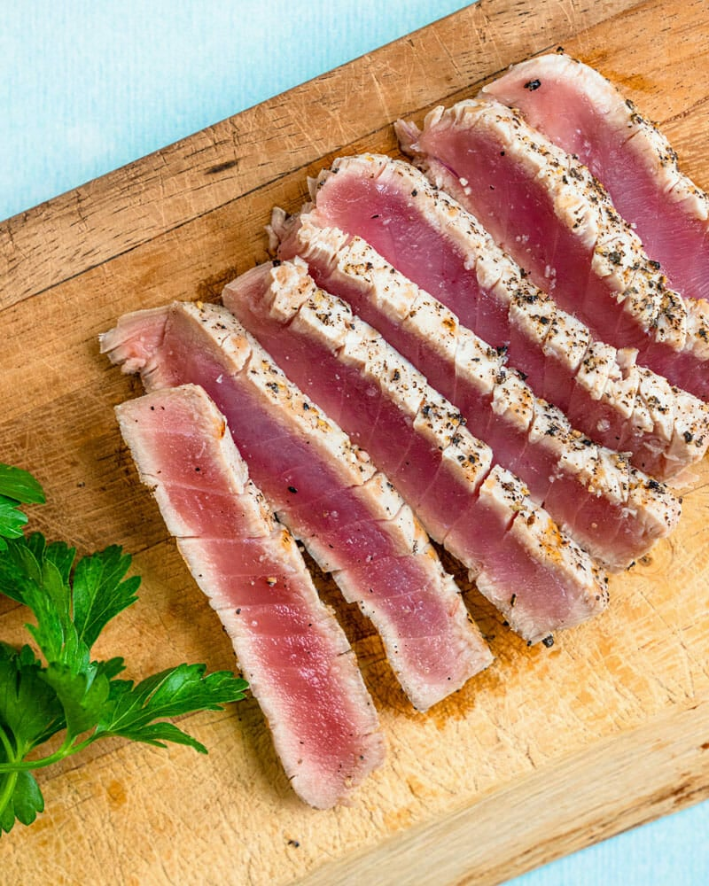

Seared Tuna

Description
Tuna steak served rare.
Ingredients
- Tuna Steak
- Soy Sauce
- Lime
- Sesame Seeds
Steps
- Mix the marinade ingredients together and coat the tuna steaks with the marinade, cover tightly, and refrigerate for at least an hour.
- Heat a heavy-bottomed skillet, preferably cast-iron, over medium-high to high heat. When the pan is hot, remove the tuna steaks from the marinade and sear them for a minute to a minute and a half on each side (even a little longer if you want the tuna less rare than pictured).
- Remove from pan and slice into 1/4-inch thick slices. Sprinkle with a few slices of scallion.